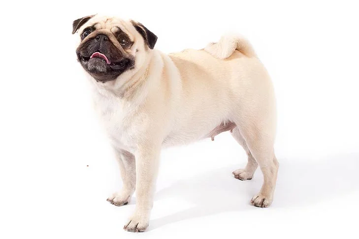
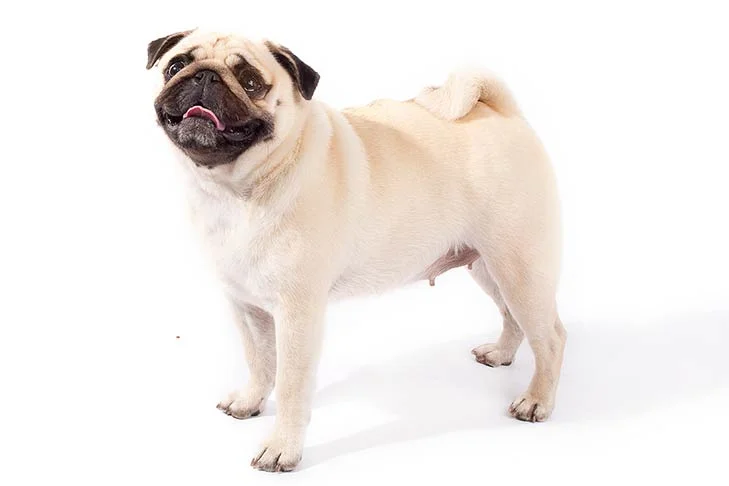

Once the mischievous companion of Chinese emperors, and later the mascot of Holland's royal House of Orange, the small but solid Pug is today adored by his millions of fans around the world. Pugs live to love and to be loved in return. The Pug's motto is the Latin phrase 'multum in parvo'(a lot in a little)' an apt description of this small but muscular breed. They come in three colors: silver or apricot-fawn with a black face mask, or all black. The large round head, the big, sparkling eyes, and the wrinkled brow give Pugs a range of human-like expressions: surprise, happiness, curiosity that have delighted owners for centuries. Pug owners say their breed is the ideal house dog. Pugs are happy in the city or country, with kids or old folks, as an only pet or in a pack. They enjoy their food, and care must be taken to keep them trim. They do best in moderate climates not too hot, not too cold but, with proper care, Pugs can be their adorable selves anywhere.
| Height | Weight | Life Expectancy |
|---|---|---|
| 10-13 inches | 14-18 pounds | 13-15 years |
| Traits & Characteristics | Rating |
|---|---|
| Affectionate with Family | 5/5 |
| Good with Young Children | 5/5 |
| Good with Other Dogs | 4/5 |
| Shedding Level | 4/5 |
| Protective Nature | 3/5 |
| Playfulness Level | 5/5 |
| Trainability Level | 4/5 |
American Kennel Club, “Pug Dog Breed Information,” American Kennel Club. https://www.akc.org/dog-breeds/pug/